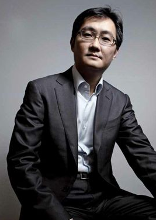
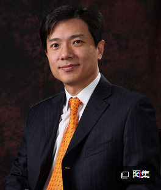
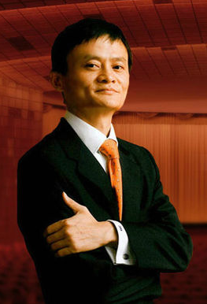
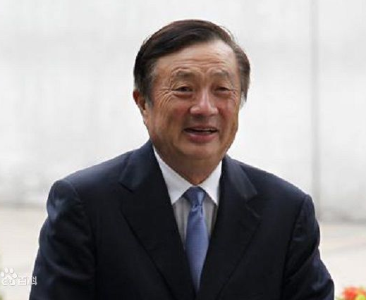

马化腾 ，男， 1971年10月29日生于广东省汕头市潮南区。腾讯公司主要创办人之一， 现担任腾讯公司控股董事会主席兼首席执行官；全国青联副主席。 他曾在深圳大学主修计算机及应用，于1993年取得深大理科学士学位。 在创办腾讯之前，马化腾曾在中国电信服务和产品供应商深圳润迅通讯发 展有限公司主管互联网传呼系统的研究开发工作，在电信及互联网行业 拥有10多年经验。 1998年和好友张志东注册成立"深圳市腾讯计算机系统有限公司"。 2009年，腾讯入选《财富》“全球最受尊敬50家公司”。在2014年3 000中国家族财富榜中马化腾以财富1007亿元荣登榜首，相比于2013年， 财富增长了540亿元。
李彦宏，百度公司创始人、 董事长兼首席执行官，全面负责百度公司的战略规划和运营管理。 1991年，李彦宏毕业于北京大学信息管理专业，随后前往美国 布法罗纽约州立大学完成计算机科学硕士学位，先后担任道·琼斯 公司高级顾问、《华尔街日报》网络版实时金融信息系统设计者， 以及国际知名互联网企业——Infoseek公司资深工程师。李彦宏 所持有的“超链分析”技术专利，是奠定整个现代搜索引擎发展趋 势和方向的基础发明之一。 2000年1月，李彦宏创建了百度。经过十多年的发展，百度已经 发展成为全球第二大独立搜索引擎和最大的中文搜索引擎。百度 的成功，也使中国成为美国、俄罗斯和韩国之外，全球仅有的4个 拥有搜索引擎核心技术的国家之一。2005年，百度在美国纳斯达 克成功上市，并成为首家进入纳斯达克成分股的中国公司。百度 已经成为中国最具价值的品牌之一。
马云，男，1964年9月10日生于浙江 省杭州市，祖籍浙江省嵊州市（原嵊县）谷来镇， 阿里巴巴集团 主要创始人，现担任阿里巴巴集团董事局主席、日本软银董事、大 自然保护协会中国理事会主席兼全球董事会成员、华谊兄弟董事、 生命科学突破奖基金会董事。[1] 1988年毕业于杭州师范学院外语系，同年担任杭州电子工业学院 英文及国际贸易教师，1995年创办中国第一家互联网商业信息发 布网站“中国黄页”，1998年出任中国国际电子商务中心国富通信 息技术发展有限公司总经理，1999年创办阿里巴巴，并担任阿里 集团CEO、董事局主席。
任正非是华为技术有限公司主要创 始人、总裁。[1] ，1944年10月25日出生于贵州省镇宁县，祖 籍浙江省浦江县。 1963年就读于重庆建筑工程学院（现已并入重庆大学），毕业后 就业于建筑工程单位。1974年为建设从法国引进的辽阳化纤总厂， 应征入伍加入承担这项工程建设任务的基建工程兵，历任技术员、 工程师、副所长（技术副团级），无军衔。任正非也因工程建设中 的贡献出席了1978年的全国科学大会和1982年的中共第十二次全国 代表大会。1987年，任正非集资21000元人民币创立华为公司， 1988年任华为公司总裁。
